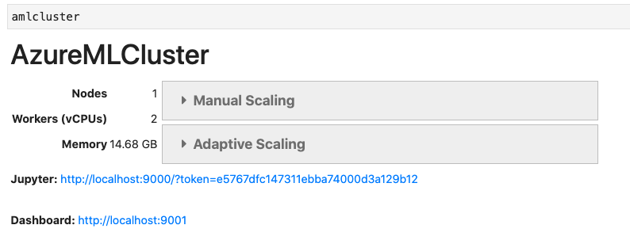

Setting up a Dask Cluster on AzureML¶
In this lesson, we’ll be using a dask cluster to replicate the exercise we did in the Big Data section where we loaded global temperature data to measure global warming at a number of locations. You can get the data we’re using for this exercise here). I’m also assuming you already have a Azure account and an AzureML workspace setup – go back here if you don’t!
Want to use Amazon AWS? You can do that too! The package we use to launch our cluster below also supports AWS. We won’t go through that here, but you can find info on it here.
If you want to follow along, just decompress the ghcnd_daily.tar.gz file and upload the resulting .csv into a Blob container using the web interface. Note this will take a little while. Will talk about more efficient methods of upload in our next tutorial.
To run this code, in addition the dask and pandas, which you should already have installed, you’ll need to install the following packages (azureml-sdk and dask_cloudprovider) with the following commands:
pip install azure-storage-blob # For managing storage
pip install azureml-sdk # For managing compute
pip install "dask_cloudprovider[all]"==0.4.1
In addition, most people will also need to run the following installs:
pip install adlfs
pip install lz4
Note that dask_cloudprovider sometimes doesn’t load the right version if you don’t specify, and as of October 2020 the right version isn’t even on conda-forge, so don’t use conda install. You can also pip install azure-storage-blob if you prefer pip to conda.
If you are using Jupyter Lab: the dask_cloudprovider package makes use of IPython Widgets, which aren’t installed in Jupyter Lab by default. So if you’re using Jupyter Lab, please install the IPython Widget extension before you move forward! If, after you type amlcluster after creating it below, you see VBox(children=…, that means you didn’t successfully install the widget.
Starting a Dask Cluster¶
[1]:
%load_ext lab_black
from azureml.core import Workspace, Experiment
from dask_cloudprovider import AzureMLCluster
[2]:
# I'm gonna load my subscription_id,
# resource_group, and workspace_name from a hidden file
# so y'all can't see them! You can just put in your code
# if its private.
import json
with open("/users/nick/azure_secrets/azure_config.json") as f:
account = json.load(f)
[3]:
# Register workspace with account info
ws = Workspace(
subscription_id=account["subscription_id"],
resource_group=account["resource_group"],
workspace_name=account["workspace_name"],
)
Note that when you run the block above, you will probably see a new browser window pop up asking you to signin, unless you’ve already done so recently.
If you ever want to change the account your logged into (e.g. to move from a personal account to an institutional account) you can be more explicit about how you want to login by running this code:
from azureml.core.authentication import InteractiveLoginAuthentication
auth = InteractiveLoginAuthentication(tenant_id=<tenant_id for account you want to use>)
ws = Workspace(
subscription_id=account["subscription_id"],
resource_group=account["resource_group"],
workspace_name=account["workspace_name"],
auth=auth
)
Where your tenant_id identifies the organization managing your account (e.g. Duke has a tenant ID). But most people only have one account (you have an Azure for Students account if you made a student account, or a personal tenant ID if you verified your account with a credit card), so hopefully this isn’t an issue for you!
In the next step we’ll spin up a new cluster. Before we do so, though, it’s worth covering a few things:
This will spin up a new compute cluster that’s completely independent of any compute you currently have running.
This cluster also has a time-out setting, so if nothing happens in the cluster for the specified time (here, 7200 seconds), the cluster will shut down so you aren’t paying for anything.
vm_sizedictates the size of each node in your new cluster. There are a couple ways to see the range of VM specifications available. You can find a general summary here, but you may also find it help to navigate to your workspace in your broswer, clickCompute, click theCompute Clusterstab, hit+ New, then look at the “Virtual machine size” dropdown to see more options and the exact names assigned to each configuration.To protect people from running up insane bills they can’t actually pay, Azure has some default limits on the number of CPUs you can have running at any time. You can see this quota by going to the
Compute Clusterstab using the steps above and clicking theView Quota. (Note if you don’t have any clusters up you can’t see this number, ironically. So quickly create a cluster with the+ Newbutton, then you’ll get the button you want). This will tell you the total number of cores you can be running at any one time across all of Azure. That means if you have a single VM up and running, that counts against the quota you might want to allocate to a cluster!For free student accounts, this quota is quite low: 6 CPUs. So the cluster we’ll create below is quite small. If your cluster allocation is above the quota, the code we run below will just hang. Sadly, you don’t get an informative error message.
For a standard free account you got with credit card verification, the quota is 4 CPUs. So you have to reduce the number of nodes in the code below to 2 (2 nodes x 2 CPUs per node = 4).
If you have a paid account, you also have a quota, though likely a much higher one (my Duke account has a 300 CPU quota). If you’re running into quota limits on a paid account, you can ask that they be increased.
These clusters are scalable, so the
initial_node_countis just that: your initial node count. So it often makes sense to start a little slow then scale up using the widget that appears below when you’re sure you’re done debugging.
The next cell should take between 5 and 15 minutes to run!
Personally, I usually see the little progress dots get about halfway across my notebook before it finishes.
[4]:
# Start up a cluster!
amlcluster = AzureMLCluster(
ws,
vm_size="Standard_D11_v2", # Azure VM size for the Compute Target. This VM has only 2 CPUs.
datastores=ws.datastores.values(), # Azure ML Datastores to mount on the headnode
environment_definition=ws.environments[
"AzureML-Dask-CPU"
], # Azure ML Environment to run on the cluster
jupyter=True, # Flag to start JupyterLab session on the headnode
scheduler_idle_timeout=7200, # scheduler idle timeout in seconds
initial_node_count=3, # Number of cores to start with.
# We only use 3 to stay below 6 CPUs quota of student accounts
)
WARNING - If 'script' has been provided here and a script file name has been specified in 'run_config', 'script' provided in ScriptRunConfig initialization will take precedence.
WARNING - If 'arguments' has been provided here and arguments have been specified in 'run_config', 'arguments' provided in ScriptRunConfig initialization will take precedence.
....................................................................
WARNING - If 'script' has been provided here and a script file name has been specified in 'run_config', 'script' provided in ScriptRunConfig initialization will take precedence.
[6]:
amlcluster
The tools that make this webside won’t render the IPython widget that should appear for you when you run amlcluster, but you should see this:

Also, note that the function AzureMLCluster will “finish” as soon as there’s a single node in the cluster, but if you asked for more than one initial node, those will continue to spin up in the background.
Using Your Cluster¶
There are two ways to use your cluster: You can click on the link above to open a connection to JupyterLab running on one of the computers in your cluster, or connect from here with this command:
[7]:
from dask.distributed import Client
c = Client(amlcluster)
/Users/Nick/miniconda3/lib/python3.7/site-packages/distributed/client.py:1129: VersionMismatchWarning: Mismatched versions found
+---------+---------------+---------------+---------------+
| Package | client | scheduler | workers |
+---------+---------------+---------------+---------------+
| python | 3.7.8.final.0 | 3.6.9.final.0 | 3.6.9.final.0 |
+---------+---------------+---------------+---------------+
warnings.warn(version_module.VersionMismatchWarning(msg[0]["warning"]))
And you’re off to the races! One note though – if you decide to work from your own computer, you may get a warning about version differences between dask on the cloud on and on your own computer. I initially got:
/Users/Nick/miniconda3/lib/python3.7/site-packages/distributed/client.py:1130: VersionMismatchWarning: Mismatched versions found
+---------+---------------+---------------+---------------+
| Package | client | scheduler | workers |
+---------+---------------+---------------+---------------+
| lz4 | None | 3.1.0 | 3.1.0 |
| numpy | 1.19.1 | 1.19.2 | 1.19.2 |
| python | 3.7.8.final.0 | 3.6.9.final.0 | 3.6.9.final.0 |
+---------+---------------+---------------+---------------+
warnings.warn(version_module.VersionMismatchWarning(msg[0]["warning"]))
The numpy and python issues don’t seem like to cause big problems (though if you have a mismatch and get problems down the road, consider changing your Python version!), but the fact that the schedulers and workers have one package I don’t (lz4) is a problem, so I installed it before moving forward. (lz4 is a compression algorithm used to send data back and forth, so not having it is a big problem).
First, we’ll contect to the container where I put the climate data. As you saw in the last exercise, you can upload data using the Azure web interface, and I would do that if you want to do these exercises. However there are more efficient tools we’ll cover in the next lesson.
[8]:
from azure.storage.blob import BlobServiceClient
# Load connection string so y'all can't see it!
with open("/users/nick/azure_secrets/azure_sa_connection_string.txt") as f:
connection_string = f.read()
# Connect to storage account
blob_service_client = BlobServiceClient.from_connection_string(connection_string)
container = blob_service_client.get_container_client("globaltemps")
# Look at the files in the container for sanity check.
for f in container.list_blobs():
print(f["name"] + "\n")
.DS_Store
colorado_temps.parquet/_common_metadata
colorado_temps.parquet/_metadata
colorado_temps.parquet/part.33.parquet
ghcnd-countries.txt
ghcnd-states.txt
ghcnd-stations.txt
ghcnd-version.txt
ghcnd_daily.csv
ghcnd_daily.tar.gz
ghcnd_daily_30gb.dat
ghcnd_daily_30gb.tar.gz
readme.txt
The step above was a fun way to see what’s in my folders, but it’s not actually required for using dask because dask can access Azure storage without the help of any other libraries – you just need to be able to pass it your Storage Account name and Access Key, which you can find by going to your Azure Portal, then your Storage Account, and then clicking on “Access Keys” on the left menu. The syntax is:
import dask.dataframe as dd
storage_options={'account_name': ACCOUNT_NAME, 'account_key': ACCOUNT_KEY}
ddf = dd.read_csv('az://{CONTAINER}/{FOLDER}/*.csv', storage_options=storage_options)
ddf = dd.read_parquet('az://{CONTAINER}/folder.parquet', storage_options=storage_options)
But since I don’t want you to see all my secret codes, I’m gonna load my information from a file. You can do this, but you can also put them in your code if your code isn’t public!
[10]:
import dask.dataframe as dd
# dask things the flag columns are floats, when really objects.
flag_dict = {}
for i in range(1, 32):
for flag in ["q", "m"]:
flag_dict.update({f"{flag}flag{i}": "object"})
temps = dd.read_csv(
"az://globaltemps/ghcnd_daily.csv",
storage_options=storage_options,
dtype=flag_dict,
)
[11]:
temps.head(10)
[11]:
| id | year | month | element | value1 | mflag1 | qflag1 | sflag1 | value2 | mflag2 | ... | qflag29 | sflag29 | value30 | mflag30 | qflag30 | sflag30 | value31 | mflag31 | qflag31 | sflag31 | |
|---|---|---|---|---|---|---|---|---|---|---|---|---|---|---|---|---|---|---|---|---|---|
| 0 | ACW00011604 | 1949 | 1 | TMAX | 289 | NaN | NaN | X | 289 | NaN | ... | NaN | X | 272 | NaN | NaN | X | 272 | NaN | NaN | X |
| 1 | ACW00011604 | 1949 | 2 | TMAX | 267 | NaN | NaN | X | 278 | NaN | ... | NaN | NaN | -9999 | NaN | NaN | NaN | -9999 | NaN | NaN | NaN |
| 2 | ACW00011604 | 1949 | 3 | TMAX | 272 | NaN | NaN | X | 289 | NaN | ... | NaN | X | 278 | NaN | NaN | X | 267 | NaN | NaN | X |
| 3 | ACW00011604 | 1949 | 4 | TMAX | 278 | NaN | NaN | X | 283 | NaN | ... | NaN | X | 289 | NaN | NaN | X | -9999 | NaN | NaN | NaN |
| 4 | ACW00011604 | 1949 | 5 | TMAX | 283 | NaN | NaN | X | 283 | NaN | ... | NaN | X | 294 | NaN | NaN | X | 300 | NaN | NaN | X |
| 5 | ACW00011604 | 1949 | 6 | TMAX | 300 | NaN | NaN | X | 294 | NaN | ... | NaN | X | 294 | NaN | NaN | X | -9999 | NaN | NaN | NaN |
| 6 | ACW00011604 | 1949 | 7 | TMAX | 300 | NaN | NaN | X | 300 | NaN | ... | NaN | X | 306 | NaN | NaN | X | 294 | NaN | NaN | X |
| 7 | ACW00011647 | 1961 | 10 | TMAX | 272 | NaN | NaN | X | -9999 | NaN | ... | NaN | NaN | -9999 | NaN | NaN | NaN | -9999 | NaN | NaN | NaN |
| 8 | AE000041196 | 1944 | 3 | TMAX | -9999 | NaN | NaN | NaN | -9999 | NaN | ... | NaN | I | 396 | NaN | NaN | I | 313 | NaN | NaN | I |
| 9 | AE000041196 | 1944 | 4 | TMAX | 258 | NaN | NaN | I | 263 | NaN | ... | NaN | I | 346 | NaN | NaN | I | -9999 | NaN | NaN | NaN |
10 rows × 128 columns
You will see that I added some code to explicitly name the types of some columns (the flags). As you may recall from our other lesson, dask isn’t great at type inference, and will otherwise assume those are float columns instead of objects. Without that code, I get this error:
/azureml-envs/azureml_c6bd17107f471892400d23146f291775/lib/python3.6/site-packages/dask/dataframe/io/csv.py in coerce_dtypes()
ValueError: Mismatched dtypes found in `pd.read_csv`/`pd.read_table`.
+---------+--------+----------+
| Column | Found | Expected |
+---------+--------+----------+
| qflag1 | object | float64 |
| qflag10 | object | float64 |
| qflag11 | object | float64 |
| qflag12 | object | float64 |
| qflag13 | object | float64 |
| qflag14 | object | float64 |
| qflag15 | object | float64 |
| qflag16 | object | float64 |
| qflag17 | object | float64 |
| qflag18 | object | float64 |
| qflag19 | object | float64 |
| qflag2 | object | float64 |
| qflag20 | object | float64 |
Let’s start by asking dask to go through this entire dataset and just pull out data for the station near my home in Colorado, and calculating the average daily max-temp for each month:
[12]:
temps = temps[temps["id"] == "USC00050848"]
Now as you may recall, dask hasn’t actually run the code above – it’s just making a plan and waiting till I run .compute() to actually execute, so if I check on temps, I’ll see:
[13]:
temps
[13]:
| id | year | month | element | value1 | mflag1 | qflag1 | sflag1 | value2 | mflag2 | qflag2 | sflag2 | value3 | mflag3 | qflag3 | sflag3 | value4 | mflag4 | qflag4 | sflag4 | value5 | mflag5 | qflag5 | sflag5 | value6 | mflag6 | qflag6 | sflag6 | value7 | mflag7 | qflag7 | sflag7 | value8 | mflag8 | qflag8 | sflag8 | value9 | mflag9 | qflag9 | sflag9 | value10 | mflag10 | qflag10 | sflag10 | value11 | mflag11 | qflag11 | sflag11 | value12 | mflag12 | qflag12 | sflag12 | value13 | mflag13 | qflag13 | sflag13 | value14 | mflag14 | qflag14 | sflag14 | value15 | mflag15 | qflag15 | sflag15 | value16 | mflag16 | qflag16 | sflag16 | value17 | mflag17 | qflag17 | sflag17 | value18 | mflag18 | qflag18 | sflag18 | value19 | mflag19 | qflag19 | sflag19 | value20 | mflag20 | qflag20 | sflag20 | value21 | mflag21 | qflag21 | sflag21 | value22 | mflag22 | qflag22 | sflag22 | value23 | mflag23 | qflag23 | sflag23 | value24 | mflag24 | qflag24 | sflag24 | value25 | mflag25 | qflag25 | sflag25 | value26 | mflag26 | qflag26 | sflag26 | value27 | mflag27 | qflag27 | sflag27 | value28 | mflag28 | qflag28 | sflag28 | value29 | mflag29 | qflag29 | sflag29 | value30 | mflag30 | qflag30 | sflag30 | value31 | mflag31 | qflag31 | sflag31 | |
|---|---|---|---|---|---|---|---|---|---|---|---|---|---|---|---|---|---|---|---|---|---|---|---|---|---|---|---|---|---|---|---|---|---|---|---|---|---|---|---|---|---|---|---|---|---|---|---|---|---|---|---|---|---|---|---|---|---|---|---|---|---|---|---|---|---|---|---|---|---|---|---|---|---|---|---|---|---|---|---|---|---|---|---|---|---|---|---|---|---|---|---|---|---|---|---|---|---|---|---|---|---|---|---|---|---|---|---|---|---|---|---|---|---|---|---|---|---|---|---|---|---|---|---|---|---|---|---|---|
| npartitions=64 | ||||||||||||||||||||||||||||||||||||||||||||||||||||||||||||||||||||||||||||||||||||||||||||||||||||||||||||||||||||||||||||||||
| object | int64 | int64 | object | int64 | object | object | object | int64 | object | object | object | int64 | object | object | object | int64 | object | object | object | int64 | object | object | object | int64 | object | object | object | int64 | object | object | object | int64 | object | object | object | int64 | object | object | object | int64 | object | object | object | int64 | object | object | object | int64 | object | object | object | int64 | object | object | object | int64 | object | object | object | int64 | object | object | object | int64 | object | object | object | int64 | object | object | object | int64 | object | object | object | int64 | object | object | object | int64 | object | object | object | int64 | object | object | object | int64 | object | object | object | int64 | object | object | object | int64 | object | object | object | int64 | object | object | object | int64 | object | object | object | int64 | object | object | object | int64 | object | object | object | int64 | object | object | object | int64 | object | object | object | int64 | object | object | object | |
| ... | ... | ... | ... | ... | ... | ... | ... | ... | ... | ... | ... | ... | ... | ... | ... | ... | ... | ... | ... | ... | ... | ... | ... | ... | ... | ... | ... | ... | ... | ... | ... | ... | ... | ... | ... | ... | ... | ... | ... | ... | ... | ... | ... | ... | ... | ... | ... | ... | ... | ... | ... | ... | ... | ... | ... | ... | ... | ... | ... | ... | ... | ... | ... | ... | ... | ... | ... | ... | ... | ... | ... | ... | ... | ... | ... | ... | ... | ... | ... | ... | ... | ... | ... | ... | ... | ... | ... | ... | ... | ... | ... | ... | ... | ... | ... | ... | ... | ... | ... | ... | ... | ... | ... | ... | ... | ... | ... | ... | ... | ... | ... | ... | ... | ... | ... | ... | ... | ... | ... | ... | ... | ... | ... | ... | ... | ... | ... | |
| ... | ... | ... | ... | ... | ... | ... | ... | ... | ... | ... | ... | ... | ... | ... | ... | ... | ... | ... | ... | ... | ... | ... | ... | ... | ... | ... | ... | ... | ... | ... | ... | ... | ... | ... | ... | ... | ... | ... | ... | ... | ... | ... | ... | ... | ... | ... | ... | ... | ... | ... | ... | ... | ... | ... | ... | ... | ... | ... | ... | ... | ... | ... | ... | ... | ... | ... | ... | ... | ... | ... | ... | ... | ... | ... | ... | ... | ... | ... | ... | ... | ... | ... | ... | ... | ... | ... | ... | ... | ... | ... | ... | ... | ... | ... | ... | ... | ... | ... | ... | ... | ... | ... | ... | ... | ... | ... | ... | ... | ... | ... | ... | ... | ... | ... | ... | ... | ... | ... | ... | ... | ... | ... | ... | ... | ... | ... | ... | ... |
| ... | ... | ... | ... | ... | ... | ... | ... | ... | ... | ... | ... | ... | ... | ... | ... | ... | ... | ... | ... | ... | ... | ... | ... | ... | ... | ... | ... | ... | ... | ... | ... | ... | ... | ... | ... | ... | ... | ... | ... | ... | ... | ... | ... | ... | ... | ... | ... | ... | ... | ... | ... | ... | ... | ... | ... | ... | ... | ... | ... | ... | ... | ... | ... | ... | ... | ... | ... | ... | ... | ... | ... | ... | ... | ... | ... | ... | ... | ... | ... | ... | ... | ... | ... | ... | ... | ... | ... | ... | ... | ... | ... | ... | ... | ... | ... | ... | ... | ... | ... | ... | ... | ... | ... | ... | ... | ... | ... | ... | ... | ... | ... | ... | ... | ... | ... | ... | ... | ... | ... | ... | ... | ... | ... | ... | ... | ... | ... | |
| ... | ... | ... | ... | ... | ... | ... | ... | ... | ... | ... | ... | ... | ... | ... | ... | ... | ... | ... | ... | ... | ... | ... | ... | ... | ... | ... | ... | ... | ... | ... | ... | ... | ... | ... | ... | ... | ... | ... | ... | ... | ... | ... | ... | ... | ... | ... | ... | ... | ... | ... | ... | ... | ... | ... | ... | ... | ... | ... | ... | ... | ... | ... | ... | ... | ... | ... | ... | ... | ... | ... | ... | ... | ... | ... | ... | ... | ... | ... | ... | ... | ... | ... | ... | ... | ... | ... | ... | ... | ... | ... | ... | ... | ... | ... | ... | ... | ... | ... | ... | ... | ... | ... | ... | ... | ... | ... | ... | ... | ... | ... | ... | ... | ... | ... | ... | ... | ... | ... | ... | ... | ... | ... | ... | ... | ... | ... | ... |
Now since we’ll most want to work with this data from one station, we can cache this subset dataframe with c.persist(temps) so dask won’t have to re-load the original data next time we run .compute(). More on caching here, as well as other dask best practices. Make sure to not just run c.persists(temps) but
rather temps = c.persist(temps).
Finally, one other note: this dataset is actually pretty small for Cloud computing, and since most of what we’re doing is reading in data and filtering it, it involves a lot of moving data around. As a result it’d be much faster on a single really large VM (which doesn’t need to use network connections to pass around data). But I wanted an example I could run relatively quickly and easily. :)
[14]:
temps = c.persist(temps)
OK, now we have our subset, and we can calculate what we want. Note that in reality, the data for this one station is actually easily small enough to put on my own computer, so I could have just run data_on_own_comp = temps.compute() above and moved the final dataset to my personal computer. Indeed, as you may recall from our previous lesson on parallelism, if you don’t have to use distributed computing, you probably don’t want to! Even the authors of dask are
quick to remind users: “For data that fits into RAM, Pandas can often be faster and easier to use than Dask DataFrame. While ‘Big Data’ tools can be exciting, they are almost always worse than normal data tools while those remain appropriate.”
But let’s carry on with this on the cluster for practice.
[15]:
temps["value31"].value_counts().compute()
[15]:
-9999 613
122 23
300 21
244 20
294 20
...
-78 1
-67 1
-56 1
361 1
378 1
Name: value31, Length: 87, dtype: int64
Now the really cool thing: if we use the link for our dashboard we got when we created our dask cluster, we can see our cluster working (note the exact number of processes will vary depending on how you specified your cluster above. This pick comes from a 16 core cluster):

So let’s replace those with missing, calculate averages across all the days in each month, and also convert from 1/10th of a degree Centigrade to Centigrade units:
[16]:
import numpy as np
import re
for i in range(1, 32):
temps[f"value{i}"] = temps[f"value{i}"].replace(-9999, np.nan)
value_columns = [i for i in temps.columns if re.match("value.*", "value.*")]
temps["avg"] = temps[value_columns].mean(axis="columns")
temps["avg_C"] = temps["avg"] / 10
Now finally we can collect our results on our personal computer, create a “time” variable that uses years and months for plotting, and plot our temperatures!
[17]:
temps["time"] = temps["year"] + (temps["month"] - 1) / 12
temps = temps[["time", "avg_C"]]
df = temps.compute()
[18]:
from plotnine import *
(
ggplot(df, aes(x="time", y="avg_C"))
+ geom_line()
+ geom_smooth(method="lowess", color="red")
+ ylab("Monthly Average of Daily Highs (C)")
+ xlab("Year")
+ ggtitle("Temperatures in Boulder, CO")
)
/Users/Nick/miniconda3/lib/python3.7/site-packages/plotnine/stats/smoothers.py:311: PlotnineWarning: Confidence intervals are not yet implementedfor lowess smoothings.

[18]:
<ggplot: (8792594166313)>
And that, my friends, is global warming.
Done with your cluster?¶
You have two options: you can shut it down manually with the method .close() on your cluster object. Thankfully, though, we also set a timeout condition when we created our cluster with the scheduler_idle_timeout keyword. We set it to 7200, so if your cluster is idle for two-hours, it will shut itself down (so you don’t go broke).
[19]:
amlcluster.close()
tornado.application - ERROR - Exception in callback <bound method Client._heartbeat of <Client: 'tcp://10.0.0.4:8786' processes=3 threads=6, memory=44.12 GB>>
Traceback (most recent call last):
File "/Users/Nick/miniconda3/lib/python3.7/site-packages/tornado/ioloop.py", line 907, in _run
return self.callback()
File "/Users/Nick/miniconda3/lib/python3.7/site-packages/distributed/client.py", line 1173, in _heartbeat
self.scheduler_comm.send({"op": "heartbeat-client"})
File "/Users/Nick/miniconda3/lib/python3.7/site-packages/distributed/batched.py", line 146, in send
raise CommClosedError
distributed.comm.core.CommClosedError
distributed.client - ERROR - Failed to reconnect to scheduler after 10.00 seconds, closing client
ERROR - _GatheringFuture exception was never retrieved
future: <_GatheringFuture finished exception=CancelledError()>
concurrent.futures._base.CancelledError
(For some reason when I get this I get the error above, but I can confirm on the Azure cite my cluster has been deleted.)
Extensions and Fun Resources¶
dask-ml: As a reminder, if you now want to do some machine learning, you can use dask-ml on this system, which does the same thing forscikit-learnthat regulardaskdoes forpandas.Parallelize your own code with
delayed: Just a reminder that while we’ve been usingdaskto emulate pandas in a distributed setting, it’s also a framework you can use for distributing your own code! Check out the ``delayed` <https://docs.dask.org/en/latest/delayed.html>`__ method to see howdaskcan manage your distributed workload.Curious how
daskcompares to other tools for distributed computing? Here’s a conceptual comparison to Spark, and here’s a case study comparison of performance. Comparisons will usually depend a lot on the specifics of the work being done, but at least in this case,daskwas a little faster than Spark. In the interview noted below, they also cite an example ofdaskbeating Spark by 40x in a project they worked on. And here’s one report of a 2000x speed up doing random forests moving from Spark to dask. As they say, mileage may vary, but I think it’s safe to say you aren’t giving anything up performance wise by usingdaskand its familiar syntax instead of Spark.Interested in using
daskin your company and want help? There’s a great new company created by the founders ofdaskto provide enterprise support fordaskcalled coiled (No, I have no affiliation with them, I just think these companies that try to offer paid support services to businesses to help them move from closed source software to open source are a great way to help make open source software better). You can also hear a fun interview with the founders about both ``dask` and coiled here <https://talkpython.fm/episodes/show/285/dask-as-a-platform-service-with-coiled>`__.The folks from coiled have also compiled a great collection of videos and tutorials about dask and Python at scale here
Working with GPUs? There’s a project to offer the kind of CPU parallelization we get from
daskfor GPUs called dask-cudf (part of the RAPIDS project. The project is young but growing quickly. My guess, though, is that those libraries will become the infrastructure for updates to tools likedask-mlrather than something most applied people need to play with. But putting it here as an FYI!
Next Steps¶
OK, that’s our short demo of computing on Azure with dask. I hope you found it useful!
As for next steps, I’d suggest the following readings, after which you should go play with your own project!
Managing Storage: A discussion of better tools for uploading, downloading, and synchronizing data.
Mounting Storage: A way to set-up easier access to your storage from your compute nodes.